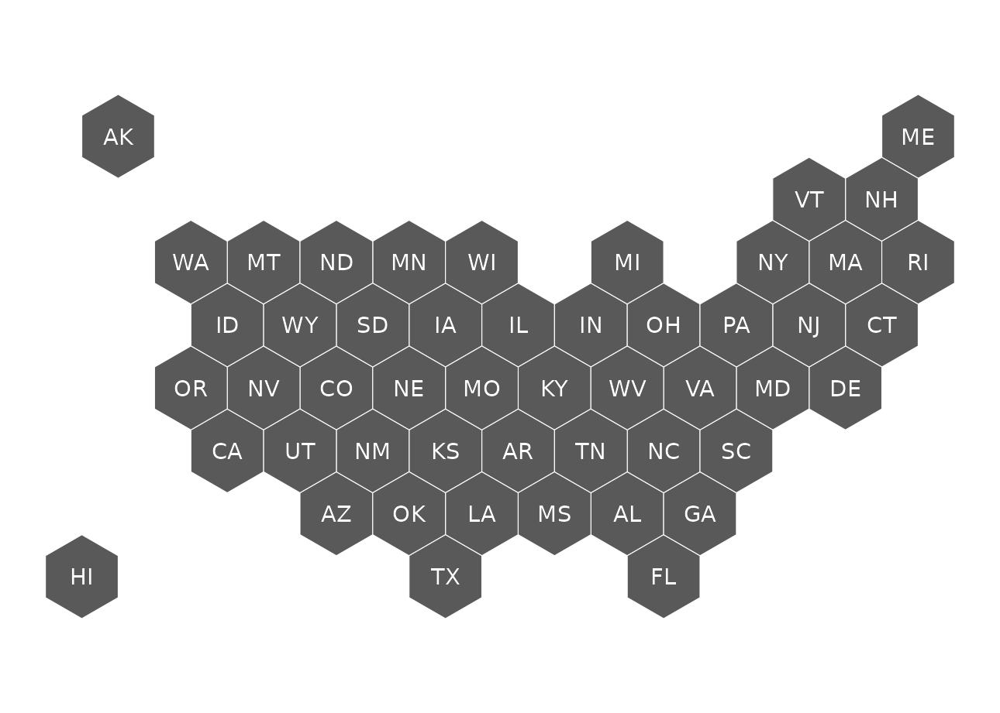
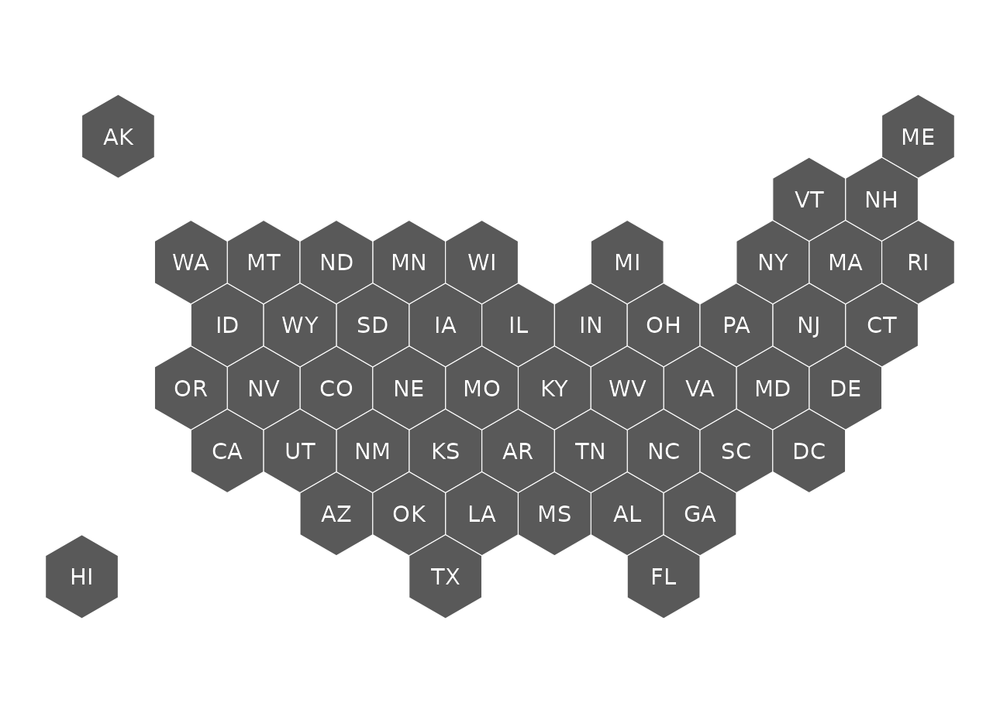
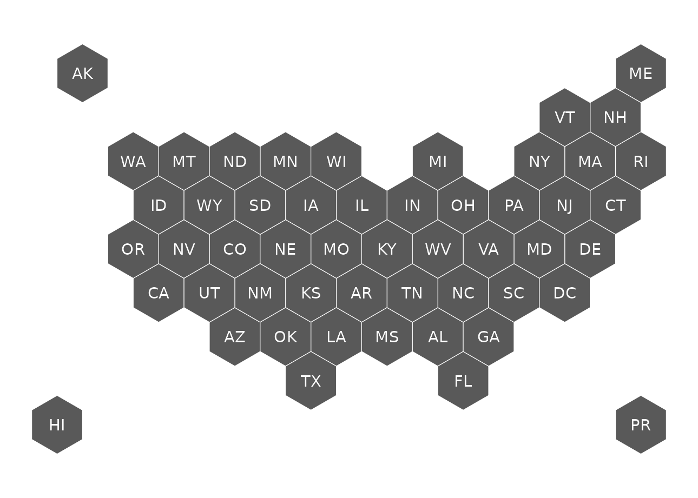
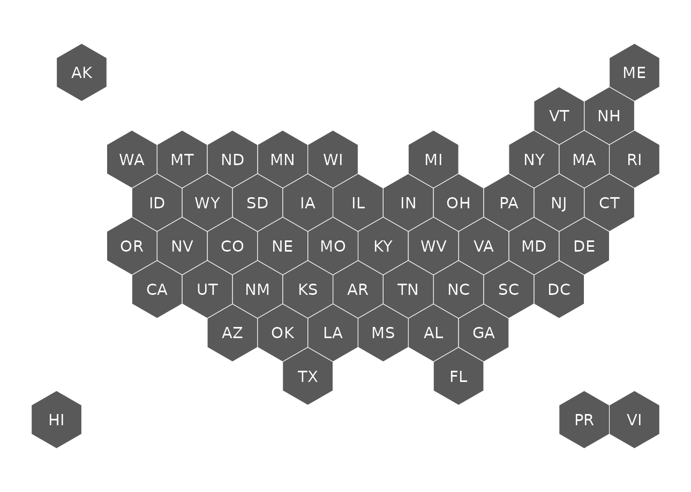
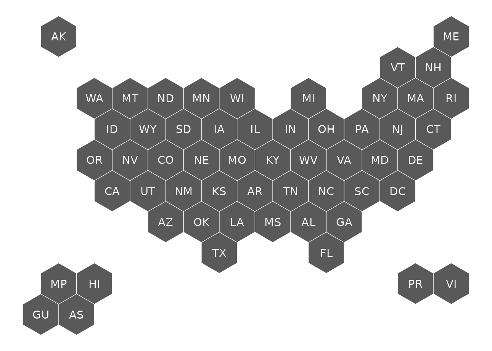
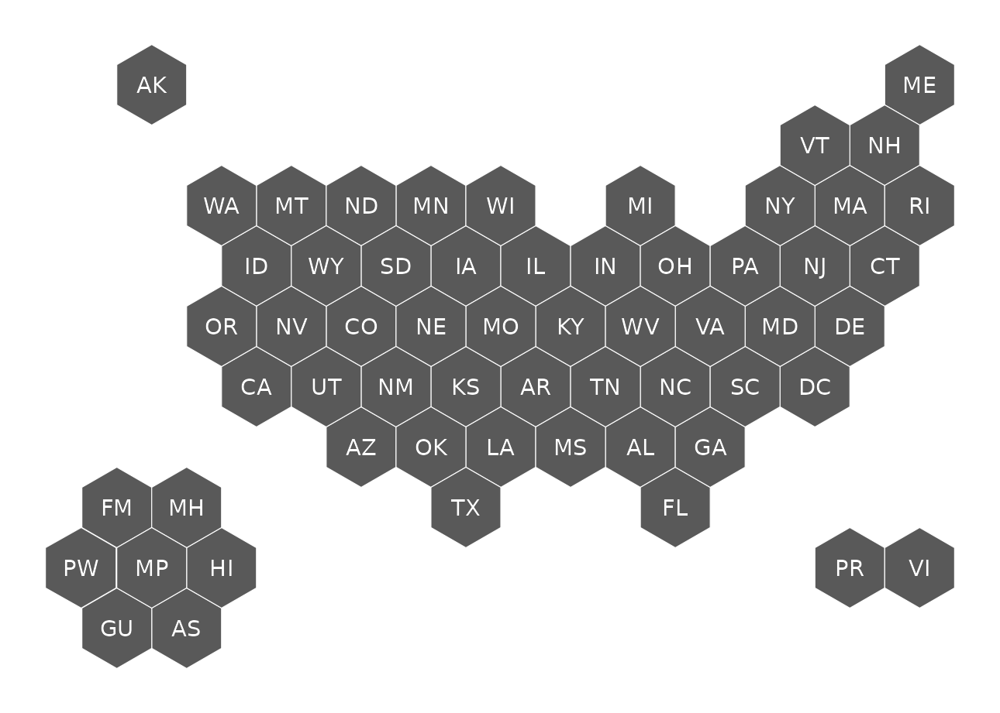
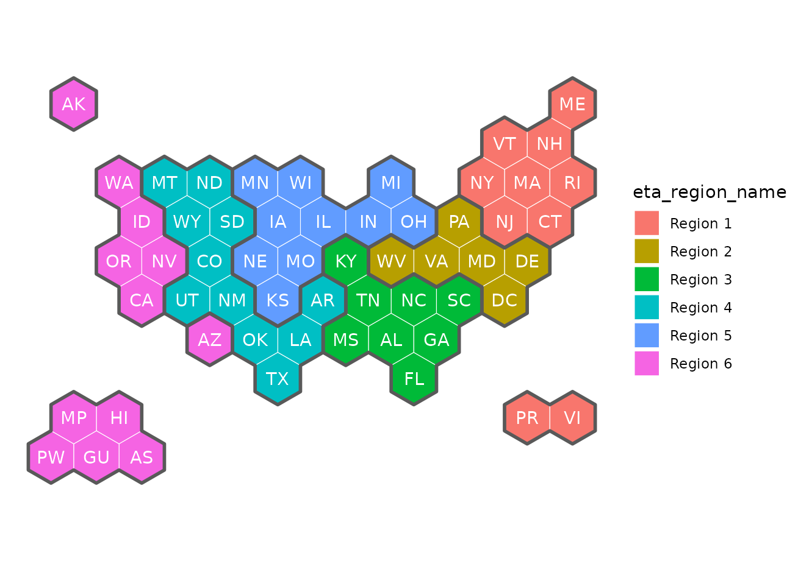

| geos / map name | usa50 |
usa51 |
usa52 |
usa53 |
usa56 |
usa59 |
usaETA/usaETAregions
|
|---|---|---|---|---|---|---|---|
| 50 states | X | X | X | X | X | X | X |
| District of Columbia | - | X | X | X | X | X | X |
| Puerto Rico - territory | - | - | X | X | X | X | X |
| U.S. Virgin Islands - territory | - | - | - | X | X | X | X |
| GU, AS, MP - territories | - | - | - | - | X | X | X |
| Palau - freely associate state | - | - | - | - | - | X | X |
| FM & MH - freely associate states | - | - | - | - | - | X | - |
usa50
50 US states only
get_coordinates(map = "usa50", coords = "hexmap") |>
ggplot() +
geom_sf(fill = "grey35", color = "white") +
geom_sf_text(aes(label = abbr_usps), color = "white") +
theme_void()
usa51
50 US States and District of Columbia.
get_coordinates(map = "usa51", coords = "hexmap") |>
ggplot() +
geom_sf(fill = "grey35", color = "white") +
geom_sf_text(aes(label = abbr_usps), color = "white") +
theme_void()
usa52
50 US States, District of Columbia and Puerto Rico
get_coordinates(map = "usa52", coords = "hexmap") |>
ggplot() +
geom_sf(fill = "grey35", color = "white") +
geom_sf_text(aes(label = abbr_usps), color = "white") +
theme_void()
usa53
50 US States, District of Columbia, Puerto Rico and US Virgin Islands
get_coordinates(map = "usa53", coords = "hexmap") |>
ggplot() +
geom_sf(fill = "grey35", color = "white") +
geom_sf_text(aes(label = abbr_usps), color = "white") +
theme_void()
usa56
50 US States, District of Columbia, and 5 territories: Puerto Rico, Virgin Islands, American Samoa, and the Northern Marina Islands.
get_coordinates(map = "usa56", coords = "hexmap") |>
ggplot() +
geom_sf(fill = "grey35", color = "white") +
geom_sf_text(aes(label = abbr_usps), color = "white") +
theme_void()
usa59
50 US States, District of Columbia, territories (Puerto Rico, Virgin Islands, American Samoa, and the Northern Marina Islands) and freely associated states (Micronesia, Marshall Islands and Palau).
get_coordinates(map = "usa59", coords = "hexmap") |>
ggplot() +
geom_sf(fill = "grey35", color = "white") +
geom_sf_text(aes(label = abbr_usps), color = "white") +
theme_void()
usaETA and usaETAregions
50 US States, District of Columbia (DC), 5 territories (Puerto Rico, Virgin Islands, American Samoa, and the Northern Marina Islands), and the freely associated state of Palau.
WIOA: Workforce Innovation and Opportunity (workforce dev.
legislation)
ETA: Department of Labor’s Employment and Training Administration
The ETA regions will rarely be plotted on their own, but they are nice to add as a border to group states in the same region together.
get_coordinates(map = "usaETA", coords = "hexmap") |>
ggplot() +
geom_sf(aes(fill = eta_region_name), color = "white") +
geom_sf(data = get_coordinates("usaETAregions", "hexmap"),
fill = NA, color = "grey35", linewidth = 1) +
geom_sf_text(aes(label = abbr_usps), color = "white") +
theme_void()